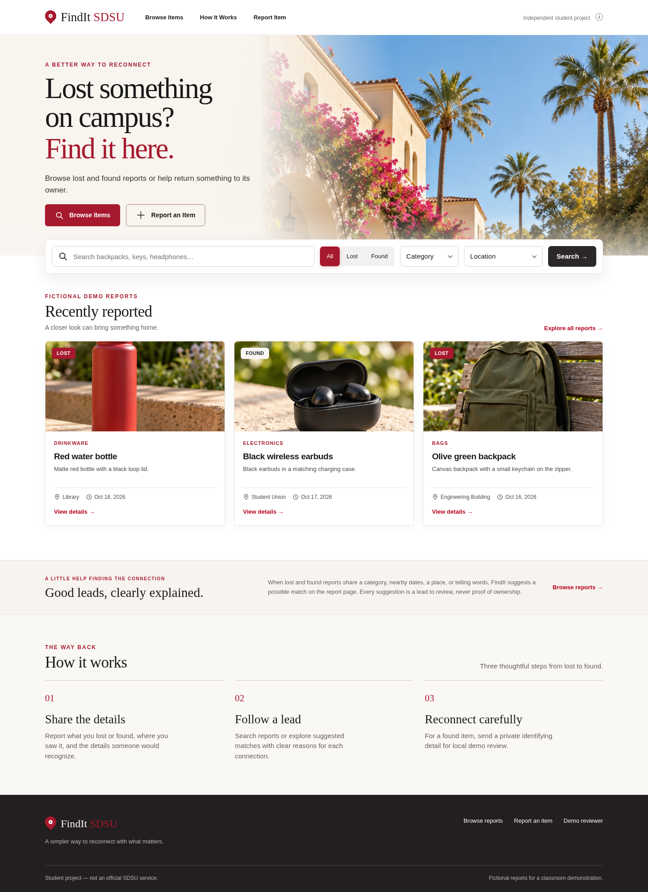

Tell the story clearly.
Add a category, item type, color, location, date, distinguishing features, and up to three photos.
CS 514 · Phase 1 project
FindIt SDSU brings lost and found reports into one searchable place. Clear details, photos, and explainable possible matches help people follow a useful lead.

Actual application screenshot · fictional local demo dataThe problem
A bottle left in the library, a set of keys at the student union, a phone someone picked up: each story begins with a small amount of information. When reports live in separate conversations, it is hard to connect them.
Our Phase 1 project explores a shared place to post and browse reports, compare public details, and take the next step through a private claim. It is a classroom proof of concept with fictional data, not a live campus service.
The product
Three connected parts make a report easier to find and review.
Add a category, item type, color, location, date, distinguishing features, and up to three photos.
Browse by text, report type, category, or location. Possible Matches show the public details behind each suggestion.
For a found item, submit a private identifying detail. A local demo reviewer can approve one claim and mark the item returned.
Inside the application


Behind the screen
Flask, SQLite, Pillow, and plain web technologies power the local application. Six related tables hold reports, locations, categories, photos, users, and claims. Automated checks cover the report-to-approval flow.